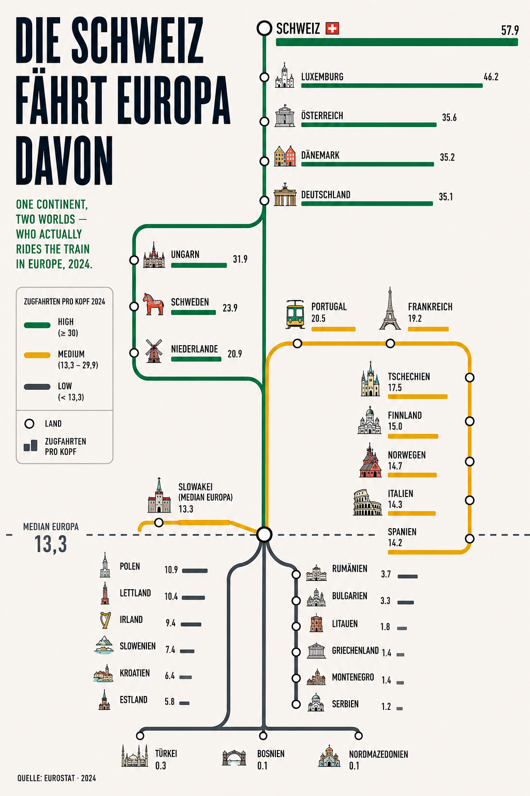

Ein Kontinent, zwei Welten — wer in Europa wirklich Bahn fährt. Aus einem schnellen ChatGPT-Draft ist eine ehrlich skalierte Metro-Karte geworden: jedes Land eine Station, jede Linie im Verhältnis der Bahnnutzung.
Infografik oder langweilige Balken? Das war eine spannende Diskussion, die sich durch einen Beitrag von Nadine Keil und die Auswertung durch Oliver Ulbrich ergeben hat — und mich danach nicht ganz losgelassen hat. Hier mein erster Draft einer Infografik: Bahnfahrer als Metro-Netz, mit Linien im Verhältnis der Bahnnutzung.
Mir gefallen sicher noch nicht alle Details — etwa die Größe der Zahlen und ein paar Sachen bei der Anordnung. Aber genau das ist der Punkt: Es zeigt, wie schnell man heute eine Idee für eine Visualisierung einfach mal ausprobieren, dann verbessern oder verwerfen kann. Infografiken sind eben kein Standard-Finanzreporting — das ist visuell meist eher ermüdend und nicht ikonisch. Eine gute Grafik bedient einen anderen Zweck: einen bleibenden Eindruck hinterlassen. Ich erinnere mich vielleicht nicht an die Zahlen, aber an die Grafik — und kann sie später googeln, weil ich Titel oder Thema noch im Kopf habe. Genau dann hat sie geschafft, was sie soll.
Das Bild teilt den Kontinent in drei Gruppen:
| Land | Gruppe | Fahrten / Kopf |
|---|---|---|
| Schweiz | Hoch | 57,9 |
| Luxemburg | Hoch | 46,2 |
| Österreich | Hoch | 35,6 |
| Dänemark | Hoch | 35,2 |
| Deutschland | Hoch | 35,1 |
| Ungarn | Hoch | 31,9 |
| Schweden | Mittel | 23,9 |
| Niederlande | Mittel | 20,9 |
| Portugal | Mittel | 20,5 |
| Frankreich | Mittel | 19,2 |
| Tschechien | Mittel | 17,5 |
| Finnland | Mittel | 15,0 |
| Norwegen | Mittel | 14,7 |
| Italien | Mittel | 14,3 |
| Spanien | Mittel | 14,2 |
| Slowakei | Median | 13,3 |
| Polen | Niedrig | 10,9 |
| Lettland | Niedrig | 10,4 |
| Irland | Niedrig | 9,4 |
| Slowenien | Niedrig | 7,4 |
| Kroatien | Niedrig | 6,4 |
| Estland | Niedrig | 5,8 |
| Rumänien | Niedrig | 3,7 |
| Bulgarien | Niedrig | 3,3 |
| Litauen | Niedrig | 1,8 |
| Griechenland | Niedrig | 1,4 |
| Montenegro | Niedrig | 1,4 |
| Serbien | Niedrig | 1,2 |
| Türkei | Niedrig | 0,3 |
| Bosnien | Niedrig | 0,1 |
| Nordmazedonien | Niedrig | 0,1 |
Quelle: Eurostat, 2024 · Zugfahrten pro Kopf und Jahr.
Auffällig ist weniger die Spitze als die Mitte. Die großen Bahnnationen sind keine Überraschung — die Schweiz mit dem dichtesten Taktfahrplan Europas, dazu die kleinen, gut vernetzten Länder Luxemburg und Österreich. Spannender ist, dass selbst Frankreich und Italien — beides Länder mit Hochgeschwindigkeitsnetzen und Milliardeninvestitionen — im Mittelfeld landen: Tempo auf der Fernstrecke ist eben etwas anderes als alltägliche Bahnnutzung über die gesamte Bevölkerung gerechnet.
Und unter dem Median wird aus dem Gefälle ein Abgrund. Wo das Netz dünn, der Takt selten und das Auto Standard ist, fährt die Bevölkerung statistisch fast gar nicht mit der Bahn. Die „zwei Welten" sind also keine reine Nord-Süd- oder Ost-West-Frage, sondern eine Frage von Netzdichte, Takt und Gewohnheit.
Die Ausgangsgrafik kam aus einem schnellen Draft von ChatGPT — als U-Bahn-Plan angelegt, schön anzusehen, aber die Balken waren rein dekorativ und nicht maßstabsgetreu. Ziel war eine Version, die den Metro-Look behält, aber ehrlich skaliert. Schritt für Schritt ist daraus eine eigenständige HTML-Grafik geworden.

Das Ergebnis ist eine Grafik, die auf den ersten Blick wie ein Liniennetzplan wirkt — und auf den zweiten Blick als Balkendiagramm funktioniert, das man tatsächlich ablesen kann.
Eine statische Grafik zeigt alles auf einmal. Das Auge springt sofort zum längsten Balken, das Gehirn sagt „verstanden" und scrollt weiter. Genau hier setzt der nächste Schritt an: die Grafik baut sich auf, statt einfach da zu sein.
Die Linien zeichnen sich selbst, der Umsteigeknoten erscheint, und dann wachsen die Stationen nacheinander aus dem Median heraus — bewusst vom kleinsten Wert nach oben. Das ist kein Selbstzweck: Der Aufbau erzwingt ein Tempo. Der Betrachter wartet, schaut zu — und schenkt der Grafik damit ein paar Sekunden echte Aufmerksamkeit, statt sie in einer Zehntelsekunde zu „erledigen".
Und die Reihenfolge erzählt mit: Weil der Aufbau unten beginnt und sich nach oben arbeitet, wird die Schweiz mit 57,9 zur Pointe — der längste Balken kommt zuletzt und schießt nach rechts heraus. Das Gefälle, um das es im ganzen Stück geht, wird so nicht nur gezeigt, sondern inszeniert.
Wichtig bleibt das Maß: Animation soll die Aussage tragen, nicht überdecken. Ein Aufbau, der die Kernbotschaft betont, hilft — Effekte, die nur blinken, ermüden. Und die statische Version oben bleibt die Arbeitsfassung: Sie ist sofort lesbar und lässt sich als Bild teilen. Die Animation ist die Bühne fürs erste Hinsehen, der ehrlich skalierte Balken die Substanz dahinter.
Und weil die ganze Grafik am Ende nur SVG ist, lässt sie sich auch dorthin bringen, wo die Daten ohnehin liegen: nach Power BI. Ein HTML-Content-Visual (z. B. „HTML Content" von Daniel Marsh-Patrick) rendert beliebiges HTML/SVG direkt im Report — gefüttert aus einer DAX-Measure, die genau dieses Markup als Text zurückgibt.
Der Trick ist vor allem Fleißarbeit: Das komplette HTML wandert als ein langer String in die Measure, und alle Anführungszeichen " im Markup werden für DAX zu doppelten "" verdoppelt. Die Fonts kommen weiterhin von Google Fonts (der Report braucht also Internet bzw. eine freigegebene Domain), und die Aufbau-Animation läuft im Visual genauso wie im Browser.
Hier sind die Werte noch fest im String hinterlegt — die Grafik ist also ein „Poster". Der nächste, ehrliche Schritt wäre, Stationen und Balkenlängen per DAX aus dem Datenmodell zu erzeugen, sodass sich das Visual mit den Daten aktualisiert. Fürs LinkedIn-Bild reicht die statische Variante; fürs echte Reporting lohnt die dynamische.
Lade DAX-Code …So nutzt du's: neue Measure anlegen, den Code einfügen, ein HTML Content-Visual auf den Canvas ziehen und die Measure als Wert zuweisen. Die ""-Verdopplung ist DAX-Syntax und bleibt im Code.
Europa fährt nicht gemeinsam Bahn, es fährt in zwei Geschwindigkeiten. Zwischen 57,9 und 0,1 Fahrten pro Kopf liegt kein Detail, sondern ein struktureller Unterschied — und genau den macht eine Grafik sichtbar, sobald die Balken ehrlich skaliert sind.
Vom Infografik-Experiment zum Vortrag — der Talk über moralisch ausgerichtete KI.